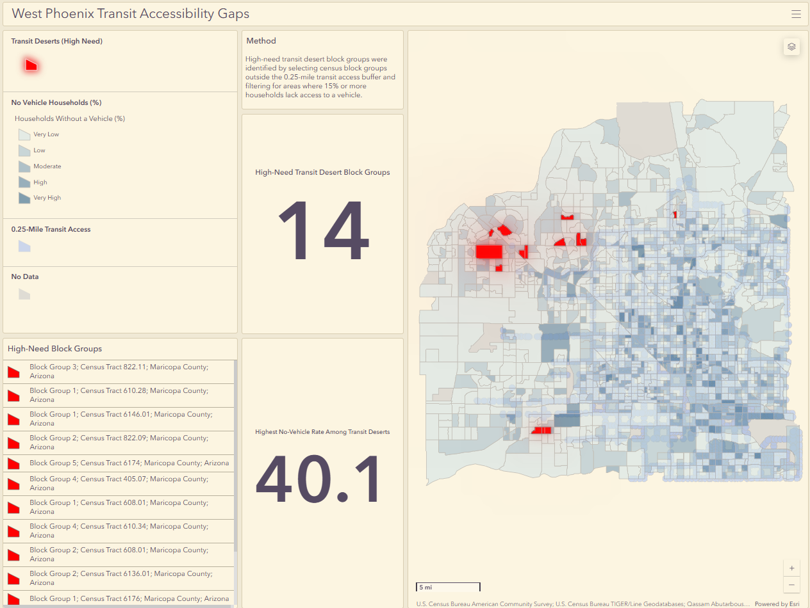

Decision Support GIS
Retail Site Suitability Dashboard
An interactive GIS dashboard that ranks candidate retail parcels using site conditions, accessibility, land use, and surrounding population context.
View Case StudyGIS Portfolio
About / GIS Focus
I am an Urban Planning graduate from Arizona State University building a GIS portfolio focused on practical GIS technician and entry-level GIS analyst workflows.
My work emphasizes spatial data cleaning, ArcGIS Pro editing, parcel and COGO practice, web maps, dashboards, and clear cartographic presentation for planning-related questions.
Selected GIS projects demonstrating spatial analysis, dashboard development, cartographic design, data preparation, and parcel-based GIS workflows.
Decision Support GIS
An interactive GIS dashboard that ranks candidate retail parcels using site conditions, accessibility, land use, and surrounding population context.
View Case Study
Transportation GIS
An interactive dashboard identifying high-need block groups where limited vehicle access overlaps with weaker nearby transit access.
View Case Study
Parcel GIS / COGO
A parcel reconstruction practice project using visible plat calls, bearings, distances, parcel labels, and ArcGIS Pro editing tools to recreate parcels 311–313.
View Case Study
Environmental GIS / Cartography
A cartographic layout showing heat vulnerability across the Phoenix Metro Area using mapped indicators and a clean final map design.
View Case StudyCore GIS skills organized by software, analysis workflows, and web-based presentation.
Bachelor of Science in Planning
2022–2026
Completed coursework and GIS projects involving spatial analysis, planning data, cartographic design, transportation access, environmental mapping, and decision-support mapping.
Email: kassam2828@gmail.com
Location: Phoenix Metro, Arizona
Focus: GIS, mapping, spatial analysis, dashboards, data cleaning, parcel mapping, and cartographic design
Contact by Email